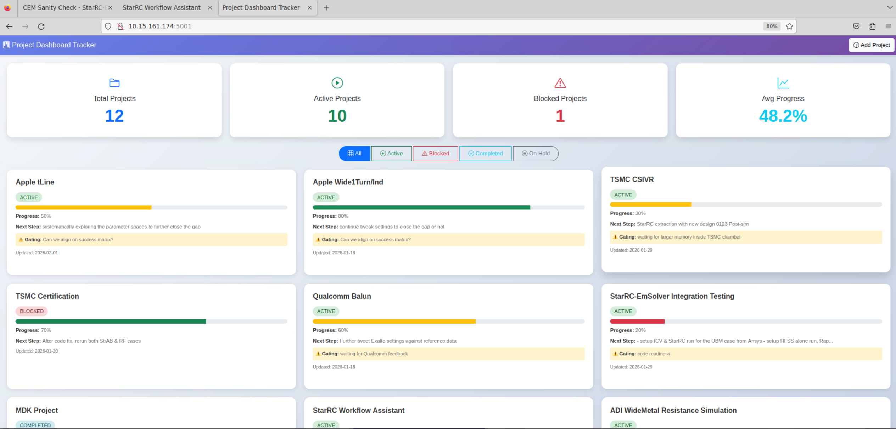

EM & SI Simulation
Master the physics before we build. Time-domain, frequency-domain, channel-level — with passivity, causality and reciprocity as gating quality metrics.
First-principles physics → empirical correlation → at-scale production. I make that capability permanent through industry standards leadership and design automation.
From first-principles physics, to empirical correlation, to at-scale production — closed loop, made permanent through standards and automation.
Master the physics before we build. Time-domain, frequency-domain, channel-level — with passivity, causality and reciprocity as gating quality metrics.
Correlate simulation with reality. TDR/TDT localization, VNA frequency-domain truth, BER and eye measurements, multi-channel auto-testers for data integrity.
Execute across DAC, ACC, AEC and AOC. Translate advanced SI capability into market-relevant outcomes under extreme schedule pressure.
Mechanisms over heroes. Physics-based exit criteria, fixture-readiness gates, escalation when physics conflicts with schedule.
IEEE 802.3, OIF, USB-IF, PCIe. Influence test methodology and channel-margin definitions — a strategic advantage, not a compliance burden.
PyAEDT, ADS Python, Virtuoso Skill, AWS Batch + Kubernetes HPC. Reusable, versioned libraries that institutionalise expertise and scale the team.
Visible metrics — impedance, crosstalk, loss — are symptoms. Root causes are physical, and chasing them in isolation is how programs fail.
| Visible metric | Underlying physical cause |
|---|---|
| Impedance mismatch | Geometric discontinuity, dielectric uncertainty |
| Crosstalk | Coupling length, asymmetry, return-path disruption |
| Insertion loss | Conductor roughness, loss tangent, mode conversion |
| Jitter | Resonance, deterministic reflections, ISI buildup |
| EMI | Common-mode current, cage grounding, shield breaks |
Quantify system sensitivities and lock the success matrix before we begin. Optimize by data, not intuition. Protect the parameters hardest to recover later.
The evolution of USB is the canonical case: a simple interface that exploded into a high-density, high-power ecosystem. When data rate, power and form factor collide, SI ceases to be component-level and becomes a system-integration discipline.
From physical plausibility to system-level margin. A traceable link from geometry to S-parameters to channel margin — and a model whose quality is treated as a primary result.
Fundamental control
Are the impedance and crosstalk profiles fundamentally sound? Find and fix the major discontinuities before wasting time fine-tuning a flawed structure.
Resonance & mode
Hunt for resonances, high-Q behavior and mode-conversion paths. I don't hope equalization will save us; I re-engineer the physics to damp or migrate resonances out of band.
System margin
Integrate EM models with TX/RX and circuit models to predict real-world outcomes: eye opening, jitter, and statistical channel margin (COM).
Before we trust any S-parameter file, it must pass passivity, causality, and reciprocity checks. This rigor prevents misleading results and ensures our confidence is earned.
At today's data rates, the biggest technical risk is not the design — it's false confidence in a flawed model. Validating the method of prediction is principal-level work.
Four complementary domains. Time and frequency cross-validate a single physical hypothesis. Automation is a data-quality tool, not a throughput tool.
Localization
Tells me where the problem is — launch, connector, via field. Immediately shortens the debug loop.
Frequency-domain truth
Mixed-mode S-parameters tell me the what and how much: loss slope, resonant notches, mode conversion.
Final arbiter
Active products live or die here. A passive channel that looks marginal may be fine once EQ and CDR engage.
Data-quality system
Eliminates operator variance, guarantees traceability, enables statistically meaningful analysis across manufacturing lots.
A technology demonstration treated as a system-validation milestone, not a marketing event. Cable loss, connector transition, equalization strategy, power and thermal — all aligned, with a repeatable test methodology.
The technical challenge is never just "meeting the eye diagram." It's creating a design and validation flow that survives variation — in the design, in assembly, and in the customer's lab.
Each product class has a different dominant bottleneck. A common operating model lets us shift product without relearning first principles.
| Class | Dominant bottleneck | Key risks | Where margin is won |
|---|---|---|---|
| DAC · Passive | Loss & crosstalk | Cable construction, connector return path | Material, geometry, shield continuity |
| ACC · Active Copper | IC behavior, power, firmware | Equalizer/CDR co-design, thermal | PHY-cable co-design, EQ adaptation |
| AEC · Active Electrical | Re-timer behavior + EMC | Latency budget, EMC containment | Re-timer placement, return path |
| AOC · Active Optical | O/E conversion, alignment | Optical sub-assembly variation, eye health | Driver/receiver matching, packaging |
SI performance, mechanical packaging and manufacturing repeatability interact most violently here. A connector that is perfect in the model but fragile in production is a failed design.
Cage grounding, shield current paths. Foundation; everything else fails without it.
Minimize differential-to-common-mode conversion. System margin and EMC both depend on it.
Shields, spacing, coupling-length control.
Pin-field and cavity Q must be designed out, not equalized away.
From day one: plating thickness, contact tolerance, solder-process distortion, mating cycles. Manufacturing variation is a first-class input to the model.
A managed system with explicit risk controls. Programs accumulate hidden technical debt when stages are decoupled — and that debt always surfaces late in validation as a "surprise" crisis.

SI, layout, manufacturing and QA all change the final waveform. Hidden assumptions create local optima that fail at system level. Transparency is a quality mechanism, not bureaucracy.
Three advantages: early insight into future electrical limits, influence over test methodology, and an 18–24 month preview of customer requirements.
I use COM to statistically quantify channel performance against complex DFE/CTLE equalization architectures — and to ground discussions with the BU in the same metric the standards body uses.
The primary objective is deterministic engineering execution: reproducible setups, consistent sweeps, standardized result extraction, auditable reports. Speed is a side effect.
Same model, two engineers, two answers. Standardised tooling removes the human degree of freedom.
Half the value of a simulation is in the extraction. Templates ensure every result generates every metric, every time.
Revisions diverge silently. Version-controlled configs make correlation studies actually possible.
Each technical module needs a management rule to be effective. This is the difference between a collection of scripts and a scalable organisational capability.
| Implementation module | Management rule |
|---|---|
| Domain decomposition / parallelisation | Priority map — what gets parallelised first |
| Mesh policy control | Adaptive vs. signoff mesh, by program phase |
| Cloud HPC orchestration (AWS Batch · K8s) | Cost / performance governance & budgets |
| Job monitoring & retry | Escalation rules, on-call SLA |
| Batch vs. interactive submission | Approval workflow for long-running sweeps |
| Automated post-processing | Mandatory metrics on every report |
The system knows when a simplified PEC model is acceptable for a trend study — and when it must be retired before signoff. This prevents junior engineers from generating false confidence with technically-correct, physically-misleading simulations.
Reusable, version-controlled Python libraries and templates for everything from tool launch to report generation. The library layer is what gives senior engineers leverage and lets new hires contribute on day one.
HFSS, ADS, Virtuoso — one interface, identical environment.
Parametric models reused across programs; dimensions become typed variables.
Frequency, corner and DOE sweeps declared in YAML, not buried in the GUI.
Standardised S-parameter, Touchstone and CITI export. No file format guesswork.
Automatic; results that fail can't progress to channel simulation.
Templated, traceable, regenerable from the same config six months later.
If a customer challenges a result six months later, we reconstruct the simulation exactly as it was run — solver settings, material models, post-processing assumptions. That is the talent leverage: senior engineers focus on architecture and interpretation; the library handles the baseline.
Six gates. Every one of them maps to a high-cost failure I've seen at least three times. The point of a checklist is to make those failures unrepeatable.
IL, RL, crosstalk, mode conversion — agreed under explicit TX/RX equalization assumptions. Without this, teams generate data that is technically correct but useless for decisions.
Frequency-dependent loss. Copper roughness. Resin-content variation. At high data rates, these are the difference between a model that correlates and one that doesn't.
Impedance, symmetry, skew — enforced. Return-path continuity is mandatory and audited, especially at layer transitions.
Vias, anti-pads, pad entries are not left to chance. Default library geometries do not define our high-speed performance.
Fixture and coupon strategy defined first. Simulate, then measure with TDR, VNA, resonance scan. Correlation is a deliverable.
Tolerance sensitivity analyzed. Production control plan maps each process check to the electrical metric it protects.
Manufacturing sensitivities are more severe. The success matrix aligns to system-level channel margin, not isolated S-parameter targets.
The foundation. Poor design here manifests as system-killing mode conversion and EMI.
Even with good Zdiff, physical asymmetry creates common-mode energy that degrades margin and causes failures.
Every tool: shields, spacing, coupling-length control.
Design out cavities and stubs that create high-Q traps.
Not production-ready until we have modeled and tested the impact of manufacturing tolerances, plastic drift, plating variation and mating repeatability.
Replace generic debate with a discriminating diagnostic process. A mismatch can have only four root causes — its signature usually narrows the search to one quadrant immediately.
Click a quadrant → see its signature and the minimum-cost experiment to isolate it.
At 200 Gb/s per lane and beyond, passive channel margin disappears. Sensitivity to every discontinuity rises exponentially — and validation workload becomes immense. Interconnect engineering is a strategic enabler.
I build and lead the systems that turn high-speed interconnect complexity into a repeatable execution advantage. I connect first-principles physics to at-scale production — with a culture of rigorous correlation and a backbone of intelligent automation.
Ready for your questions.